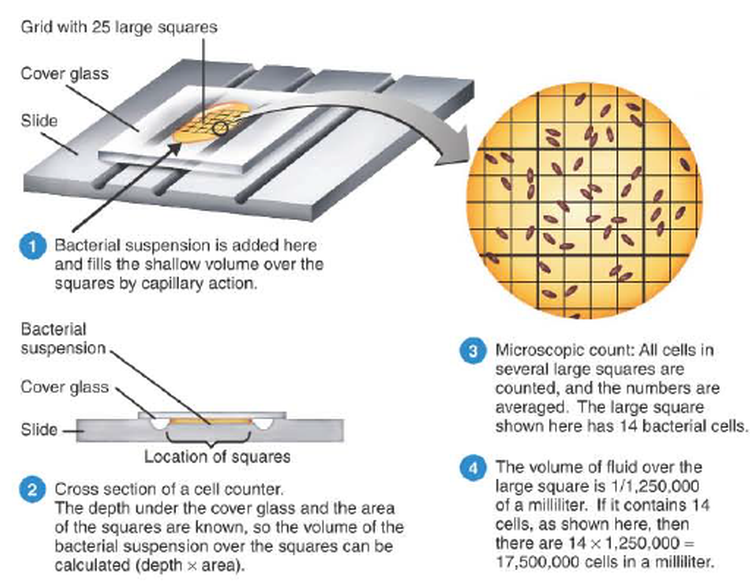
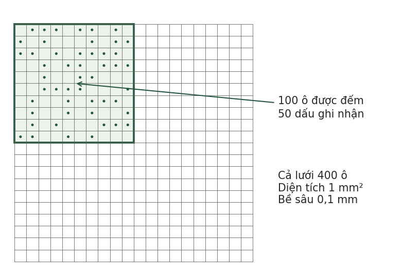

Đếm theo thể tích và chọn đúng phép định lượng
Vi sinh vật · Slide 6 · 4 trắc nghiệm và 1 tự luận
Bắt đầu học ↓Học trọn chương và làm bộ 80 trắc nghiệm, 15 tự luận
Sau buổi này
- Đổi kích thước lưới thành thể tích và tính mật độ.
- Phân biệt đếm trực tiếp, lọc, MPN, OD, hoạt tính và sinh khối khô.
Gợi nhớ
Nhắc lại vì sao OD, CFU và số tế bào toàn phần có thể không đồng biến.
Học kiến thức qua hình
Quan sát hình minh họa

Hình gốc đặt lưới nhìn từ trên cạnh lát cắt cho chiều sâu. Ví dụ số trên hình khác ví dụ 100 ô của bài.
Quan sát · Chỉ phần lưới ở ảnh nhìn từ trên và khe có chiều sâu ở hình cắt ngang.
Dự đoán · Nếu dùng 100 trong 400 ô nhỏ ở cùng độ sâu, thể tích đếm bằng bao nhiêu phần toàn lưới?
Mở giải thích sau khi dự đoán
Thể tích bằng diện tích nhân chiều sâu. Với cùng chiều sâu, phần diện tích 100/400 cũng là 1/4 thể tích lưới.
| Cách đo | Đầu ra | Lưu ý |
|---|---|---|
| Buồng đếm | Số tế bào theo thể tích | Có thể tính cả tế bào chết |
| CFU theo số đĩa | Đơn vị tạo khuẩn lạc | Một cụm có thể cho một CFU |
| Lọc | Tín hiệu từ phần giữ | Cần theo dõi thể tích gốc |
| MPN | Ước lượng xác suất mật độ | Dùng mẫu dương/âm, có bất định |
| OD | Độ đục | Cần hiệu chuẩn để suy mật độ |
| Tín hiệu chuyển hóa | Mức hoạt động | Phụ thuộc trạng thái tế bào |
| Khối lượng khô | Khối lượng sinh khối | Gộp vật chất sống và chết còn lại |
Tổng hợp slide 9–21 của bộ sinh trưởng phần 2.
Đọc hình để tự rút ra cơ chế
Quan sát · Lưới có 400 ô nhỏ bằng nhau. Bảng ví dụ đếm 50 tế bào trong 100 ô.
Dự đoán · Thể tích quan sát bằng bao nhiêu phần của toàn lưới?
Mở giải thích sau khi dự đoán
Đếm 1/4 diện tích ở cùng chiều sâu, tức 1/4 thể tích. V = 10⁻⁴/4 = 2,5 × 10⁻⁵ mL.
Đếm theo một thể tích biết trước
Buồng đếm cho chiều sâu và diện tích lưới. Tích của hai số là thể tích quan sát. Chia số đếm cho thể tích rồi đổi đơn vị. Với 1 mm² × 0,1 mm, toàn lưới chứa 0,1 mm³ = 10⁻⁴ mL.
Các phép đo thay thế
Lọc tập trung phần vật chất bị giữ từ một thể tích đã biết. MPN là ước lượng xác suất dựa trên mẫu kết quả dương và âm. OD dựa trên tín hiệu độ đục. Tín hiệu chuyển hóa đo hoạt động đại diện, còn khối lượng khô đo lượng vật chất.
Liên hệ thực tế
Khi đọc một báo cáo có nhiều chỉ số, mỗi con số nên đi kèm tên đại lượng đo và đơn vị.
Cụm bài tập
Một bộ số liệu giảng dạy có ba phép đo
A là mô hình buồng đếm 400 ô, diện tích toàn lưới 1 mm², sâu 0,1 mm. Đếm 50 tế bào trong 100 ô. B chỉ ghi số phép đo dương/âm theo nhóm thể tích. C ghi tín hiệu chuyển hóa giảm nhưng khối lượng khô gần như giữ nguyên.

Ô tô nhẹ đánh dấu 100 ô đã đếm trong tổng 400 ô. Mỗi chấm là một dấu ghi nhận trong ví dụ.
Đối chiếu bài làm
Chọn một chỗ còn phân vân. Giải thích lại bằng lời của mình rồi thử một câu cùng dạng.